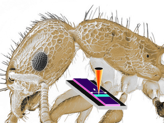

Microscopía Electrónica

• Microscopía de transmisión
• Microscopía de barrido
• Fijación
• Deshidratación
• Secado
• Inclusión
• Microtomía
• Imagenología
Presentación:
• Microscopía electrónica.
Lecturas complementarias:
• Microscopía electrónica de transmisión. Por Pablo Lechuga Paredes (2020).
• Microscopía electrónica de barrido. Por Cecilia G. Ruiz González (2020).
Horario
Lunes: 11:00 a 12:30
Miércoles: 12:30 a 15:00
Programa analítico
Bibliografía
para el curso
Morfología de Insectos
Blender

Versión móvil